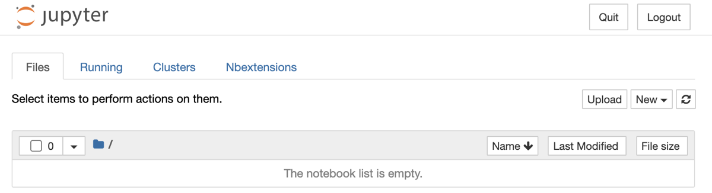
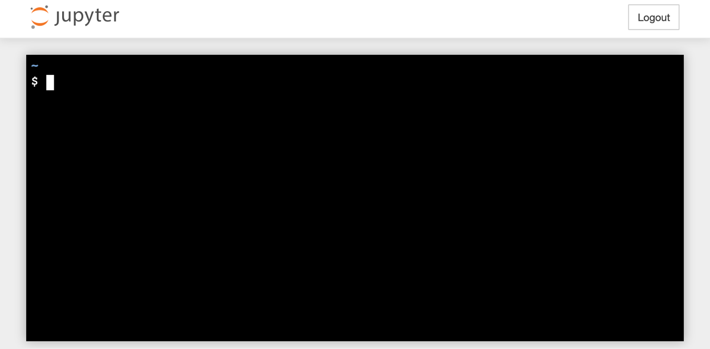
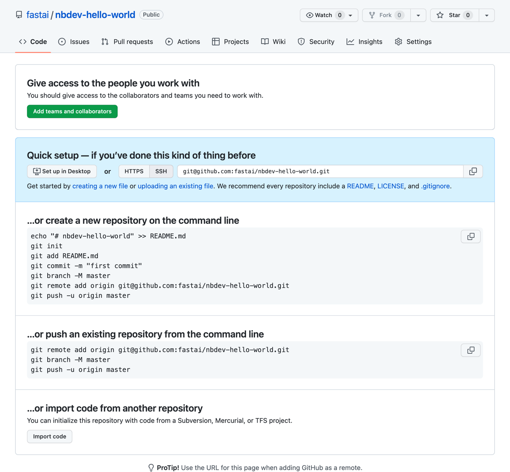
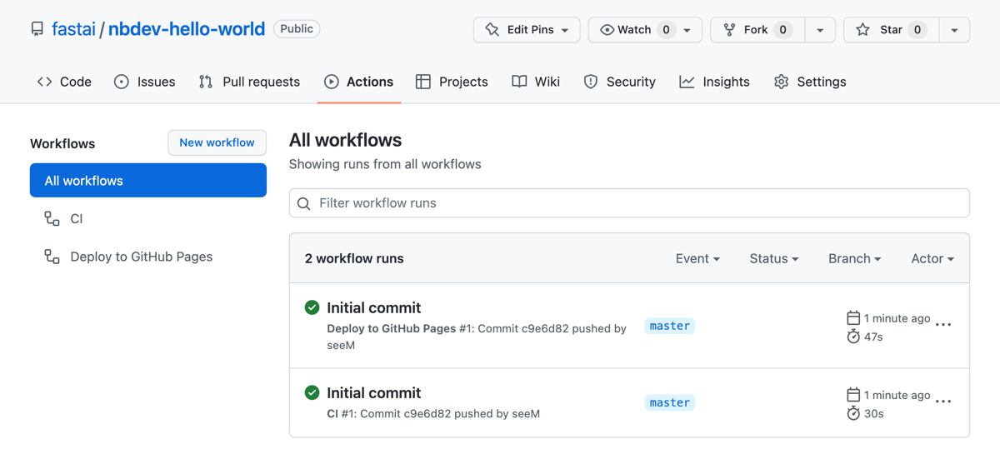
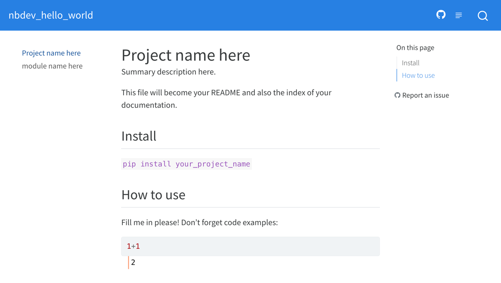

say_hello("Isaac")'Hello Isaac!'This tutorial shows you how to create a Python package from scratch using nbdev.
Alternatively, you can watch this video tutorial where Jeremy Howard and Hamel Husain guide you through a similar process step by step:
You’ll need the following software to complete the tutorial, read on for specific installation instructions:
If you haven’t worked with Python before, we recommend getting started with the Anaconda Individual Edition and using the conda package manager.
Launch a terminal and install Jupyter Notebook by entering:
conda install notebook…or
pip install notebook…if you’re using the pip package manager.
Enter y (for yes) if prompted. Installation should take a few seconds, during which text will be printed in the terminal. You’ll know its completed when you see the terminal prompt and are able to type again.
You can now launch Jupyter by entering:
jupyter notebookThis should open the Jupyter home page in a new browser tab:

As Jupyter power users we still prefer Jupyter Notebook (with customizations) over more feature-full alternatives like Jupyter Lab, VSCode, or PyCharm. We find Jupyter Notebook simpler, faster, and more robust.
The next step is to install nbdev itself. Jupyter Notebook comes with its own terminal, so we’ll use that moving forward.
In the Jupyter home page (shown in the previous section), click the “New” dropdown on the right side, then “Terminal”.
A browser tab should open with a blank terminal:

Enter:
conda install -c fastai nbdev…or
pip install nbdev…if you’re using pip.
Type y (for yes) when prompted, and wait a few seconds until nbdev is installed.
nbdev provides a command to install the latest version of Quarto. In the terminal, enter:
nbdev_install_quartoYour password may be requested at this point. Since nbdev is open source, you can read the source code of this command to verify that it isn’t doing anything malicious. Or, if you prefer, you may instead follow Quarto’s official installation instructions.
By the end of this section you’ll have your own nbdev repo with tests, continuous integration, streamlined PyPI & conda packaging, and a documentation website.
Create an empty GitHub repo using the convenient link github.com/new. If you get stuck, you might find GitHub’s Create a repo page helpful.
Remember to add a description, since nbdev will use that later. Don’t add a README file, .gitignore, or license file just yet.
If you’re using the web interface, it should look something like this before you click “Create Repository”:

You should then be redirected to your new repo:

GitHub’s web interface is a great way to get started. As you grow more experienced, you might want to explore the CLI (command line interface). We often prefer to use command line tools for repetitive tasks where we’re likely to make mistakes. Having those tasks written as small scripts in your terminal means that you can repeat them with little effort.
Now clone your repo from the Jupyter terminal you started earlier (or create a new terminal following those instructions if needed). If you get stuck here, you might find GitHub’s Cloning a repository page helpful.
Since we created a repo named nbev-hello-world with the fastai user, we can clone it as follows:
git clone https://github.com/fastai/nbdev-hello-world.gitThen cd (change directory) to our repo:
cd nbdev-hello-worldYou may have seen this message while cloning:
You appear to have cloned an empty repository.…since the repo is completely empty. Let’s add some files!
nbdev provides the nbdev_new command to initialise an empty git repository. It’ll infer information about your project from git and GitHub, and ask you to input anything remaining. It will create files in your repo that:
Initialise your nbdev repo by entering:
nbdev_newCommit and push all changes to GitHub:
git add .
git commit -m'Initial commit'
git pushIt’s time to see all of the goodies nbdev gives you!
Open GitHub Actions by clicking the “Actions” tab near the top of your repo page. You should see two workflow runs:

If you opened this page shortly after pushing your initial commit, the runs may not have a green tick because they’re still “In progress” or “Queued”. That’s no problem, they shouldn’t take much more than a minute to complete.
What do these mean?
Note that you’ll need to enable GitHub Pages for your repo before you can access your docs website. We’ll do that now.
nbdev hosts your docs on GitHub Pages—an excellent (and free!) way to host websites.
You can enable it for your repo by clicking on the “Settings” tab near the top-right of your repo page, then “Pages” on the left, then setting the “Branch” to “gh-pages”, and finally clicking “Save”.
nbdev uses GitHub Pages by default because its easily accessible, however you can use any host you like.
It should look similar to this after you click “Save”:

Head back to GitHub Actions and you should see a new workflow run: “pages build and deployment”. As the name says, this workflow deploys your website contents to GitHub Pages.

Wait for the workflow run to complete, then open your website. By default it should be available at: https://{user}.github.io/{repo}. For example, you can view fastai’s nbdev-hello-world docs at https://fastai.github.io/nbdev-hello-world.

Next, edit the settings.ini file in your cloned repo. This file contains all the necessary information for when you’ll be ready to package your library. The basic structure (that can be personalized provided you change the relevant information in settings.ini) is that the root of the repo will contain your notebooks, the docs folder will contain your auto-generated docs, and a folder with a name you select will contain your auto-generated modules.
Now you can create your Python module. To do so, just run nbdev_export from the terminal at the root of your project folder, which builds the .py modules and library from the jupyter notebook.
Before you continue, you should ensure you have the latest version of your Python library and Quarto installed. Run nbdev_install to do an editable install of your local Python library as well as fetch and install the latest version of Quarto.
Jupyter Notebooks store additional metadata (like cell execution order) which cause challenges with git. nbdev makes working with notebooks becomes much easier. As a first step, run nbdev_install_hooks in the terminal from your project folder. This sets up a jupyter hook which remove metadata from your notebooks automatically, avoiding unnecessary file changes and greatly reducing the chance of a conflict. It also installs a git hook which attempts to resolve conflicts, and if any conflicts can’t be resolved, places conflict markers into a notebook which you can fix directly in Jupyter.
You can call nbdev_preview from the root of the repo to start the documentation server so you can see how your docs will render as you edit your notebooks. This is optional, but often useful especially if you are writing docs.
Now, run jupyter notebook, and click 00_core.ipynb (you don’t have to start your notebook names with a number like we do here; but we find it helpful to show the order you’ve created your project in). You’ll see something that looks a bit like this:
#|default_exp coremodule name here
API details.
Let’s explain what these special cells mean.
The markdown cell uses special syntax to define the title and summary of your module. Feel free to replace “module name here” with a title and “API details.” with a summary for your module.
Let’s add a function to this notebook, e.g.:
#|export
def say_hello(to):
"Say hello to somebody"
return f'Hello {to}!'Notice how it includes #|export at the top - this means it will be included in your module, and documentation. The documentation will look like this:
say_hello (to)
Say hello to somebody
It’s a good idea to give an example of your function in action. Just include regular code cells, and they’ll appear (with output) in the docs, e.g.:
say_hello("Isaac")'Hello Isaac!'Examples can output plots, images, etc, and they’ll all appear in your docs, e.g.:
from IPython.display import display,SVGdisplay(SVG('<svg height="100"><circle cx="50" cy="50" r="40"/></svg>'))
You can also include tests:
assert say_hello("Hamel")=="Hello Hamel!"You should also add markdown headings as you create your notebook; one benefit of this is that a table of contents will be created in the documentation automatically.
Now you’re ready to create your documentation home page and README.md file; these are both generated automatically from index.ipynb. So click on that to open it now.
You’ll see that there’s already a line there to import your library - change it to use the name you selected in settings.ini. Then, add information about how to use your module, including some examples. Remember, these examples should be actual notebook code cells with real outputs.
If you have not already, you should view your docs in fully rendered form to catch any mistakes. You can preview your documentation site with the command nbdev_preview. Note that your docs will build automatically in CI (discussed below).
Before commiting to GitHub we recommend running nbdev_prepare, which bundles the following commands together for you to test your code and build the library:
nbdev_export: Builds the .py modules and library from the jupyter notebooknbdev_test: Tests all your notebooksnbdev_clean: Cleans your notebooks to get rid of extreanous output for GithubYou can now check-in the generated files with git add, git commit and git push. (You can use git status to check which files have been generated.) The following command should be sufficient:
git add -A; git commit -m'check in files'; git pushWait a minute or two for Github to process your commit, and then head over to the Github website to look at your results.
Back in your project’s Github main page, click where it says 1 commit (or 2 commits or whatever). Hopefully, you’ll see a green checkmark next to your latest commit. That means that your documentation site built correctly, and your module’s tests all passed! This is checked for you using continuous integration (CI) with GitHub actions. This does the following:
nbdev_clean)nbdev_test)The template contains a basic CI that uses the two points above, edit the file .github/workflows/test.yaml to your liking and comment out the parts you don’t want.
If you have a red cross, that means something failed. Click on the cross, then click Details, and you’ll be able to see what failed.
CI will automatically build docs and deploy them for you. You can see the code for this in .github/workflows/deploy.yaml. You can enable Github Pages by clicking on the Settings tab in your repo, then click Pages on the left side bar. Set “Source” to gh-pages branch and the /root folder. Once you’ve saved, if you refresh that page, Github will have a link to your new website. Copy that URL, and then go back to your main repo page, click “edit” next to the description and paste the URL into the “website” section. While you’re there, go ahead and put in your project description too.
To see the URL for your docs site, you can go to the Settings tab on your GitHub repo, click Pages on the left hand side, and your URL will be displayed there. If you need to customize the domain name, see this article.
Once everything is passing, have a look at your readme in Github. You’ll see that your index.ipynb file has been converted to a readme automatically.
Next, go to your documentation site (e.g. by clicking on the link next to the description that you created earlier). You should see that your index notebook has also been used here.
Congratulations, the basics are now all in place! Let’s continue and use some more advanced functionality.
Create a class in 00_core.ipynb as follows:
#|export
class HelloSayer:
"Say hello to `to` using `say_hello`"
def __init__(self, to): self.to = to
def say(self):
"Do the saying"
return say_hello(self.to)This will automatically appear in the docs like this:
HelloSayer (to)
Say hello to to using say_hello
However, methods aren’t automatically documented. To add method docs, use show_doc:
show_doc(HelloSayer.say)HelloSayer.say ()
Do the saying
And add some examples and/or tests:
o = HelloSayer("Alexis")
o.say()'Hello Alexis!'Notice above there is a link from our new class documentation to our function. That’s because we used backticks in the docstring:
"Say hello to `to` using `say_hello`"These are automatically converted to hyperlinks wherever possible. For instance, here are hyperlinks to HelloSayer and say_hello created using backticks.
Since you’ll be often updating your modules from one notebook, and using them in another, it’s helpful if your notebook automatically reads in the new modules as soon as the Python file changes. To make this happen, just add these lines to the top of your notebook:
%load_ext autoreload
%autoreload 2It’s helpful to be able to export all your modules directly from a notebook, rather than going to the terminal to do it. All nbdev commands are available directly from a notebook in Python. A new cell with the following contents and run it to export your modules (I normally make this the last cell of my notebooks).
#| hide
from nbdev import nbdev_export
nbdev_export()If you want to prevent code from getting executed when rendering or testing docs, use the comment #|eval: false in a code cell.
See the Quarto docs for more execution options.
If your module requires other modules as dependencies, you can add those prerequisites to your settings.ini in the requirements section. The requirements should be separated by a space and if the module requires at least or at most a specific version of the requirement this may be specified here, too.
For example if your module requires the fastcore module of at least version 1.0.5, the torchvision module of at most version 0.7 and any version of matplotlib, then the prerequisites would look like this:
requirements = fastcore>=1.0.5 torchvision<0.7 matplotlibIn addition to requirements you can specify dependencies with other keywords that have different scopes. Below is a list of all possible dependency keywords:
requirements: Passed to both pip and conda setuppip_requirements: Passed to pip setup onlyconda_requirements: Passed to conda setup onlydev_requirements: Passed to pip setup as a development requirementFor more information about the format of dependencies, see the pypi and conda docs on creating specifications in setup.py and meta.yaml, respectively.
Behind the scenes, nbdev uses that standard package setuptools for handling installation of modules. One very useful feature of setuptools is that it can automatically create cross-platform console scripts. nbdev surfaces this functionality; to use it, use the same format as setuptools, with whitespace between each script definition (if you have more than one).
console_scripts = nbdev_export=nbdev.cli:nbdev_exportIf you want people to be able to install your project by just typing pip install your-project then you need to upload it to pypi. The good news is, we’ve already created a fully pypi compliant installer for your project! So all you need to do is register at pypi (click “Register” on pypi) if you haven’t previously done so, and then create a file called ~/.pypirc with your login details. It should have these contents:
[pypi]
username = your_pypi_username
password = your_pypi_passwordAnother thing you will need is twine, so you should run once
pip install twineTo upload your project to pypi, just type nbdev_pypi in your project root directory. Once it’s complete, a link to
The command nbdev_release from the root of your nbdev repo will bump the version of your module and upload your project to both conda and pypi.
There are two jupyter notebook extensions that I highly recommend when working with projects like this. They are:
Navigate menu item it adds to your notebooks, or the TOC sidebar it adds. These can be modified and/or hidden using its settings.nbdev supports equations (using Quarto). You can include math in your notebook’s documentation using the following methods.
Using $$, e.g.:
$$\sum_{i=1}^{k+1}i$$
Which is rendered as:
\[\sum_{i=1}^{k+1}i\]
Using $, e.g.:
This version is displayed inline: $\sum_{i=1}^{k+1}i$ . You can include text before and after.Which is rendered as:
This version is displayed inline: \(\sum_{i=1}^{k+1}i\) . You can include text before and after.
For more information, see the Quarto Docs
To control what is displayed or hidden in the docs from a notebook, you will want to use one more directives. Directives are special comments that have are preceeded by #| that do some kind of pre or post processing of a notebook data before docs are rendered. Some of these directives are part of Quarto, but others are ones that we have added to nbdev. A walk-through of the most common ones are below:
#|hideWhen you use this directive, you will not see the cell input or output.
#|echo: falseThis makes sure that only the output of a code cell is shown, not its input.
you can see the output but not the code!#|hide_lineYou can use this to hide as specific line in your code. for example:
def _secret(): ...
for i in range(3):
_secret() #|hide_line
print(i)becomes this:
def _secret(): ...
for i in range(3):
print(i)0
1
2#|filter_streamThis allows you to filter lines containing specific keywords in cell outputs. For example
#|filter_stream FutureWarning MultiIndex
print('\n'.join(['A line', 'Foobar baz FutureWarning blah',
'zig zagMultiIndex zoom', 'Another line.']))becomes this:
print('\n'.join(['A line', 'Foobar baz FutureWarning blah',
'zig zagMultiIndex zoom', 'Another line.']))A line
Another line.See the Quarto docs for additional code visibility options.
You can quickly pull up a list of all the nbdev cli commands as well as a short description of what each command does with the command nbdev_help.
Don’t forget that nbdev itself is written in nbdev! It’s a good place to look to see how fast.ai uses it in practice, and get a few tips. You’ll find the nbdev notebooks here in the nbs folder on Github.
nbdev supports most Quarto features. We encourage you to read the Quarto documentation to discover all the features available to you. For example, this is how you can incorporate mermaid charts:
flowchart LR
A[Hard edge] --> B(Round edge)
B --> C{Decision}
C --> D[Result one]
C --> E[Result two]
Here is another example of using Graphviz:
It is worth taking a look at the documentation for figures, callouts, markdown, widgets, layouts, conditional content and quarto extensions to name a few useful things we have encountered.